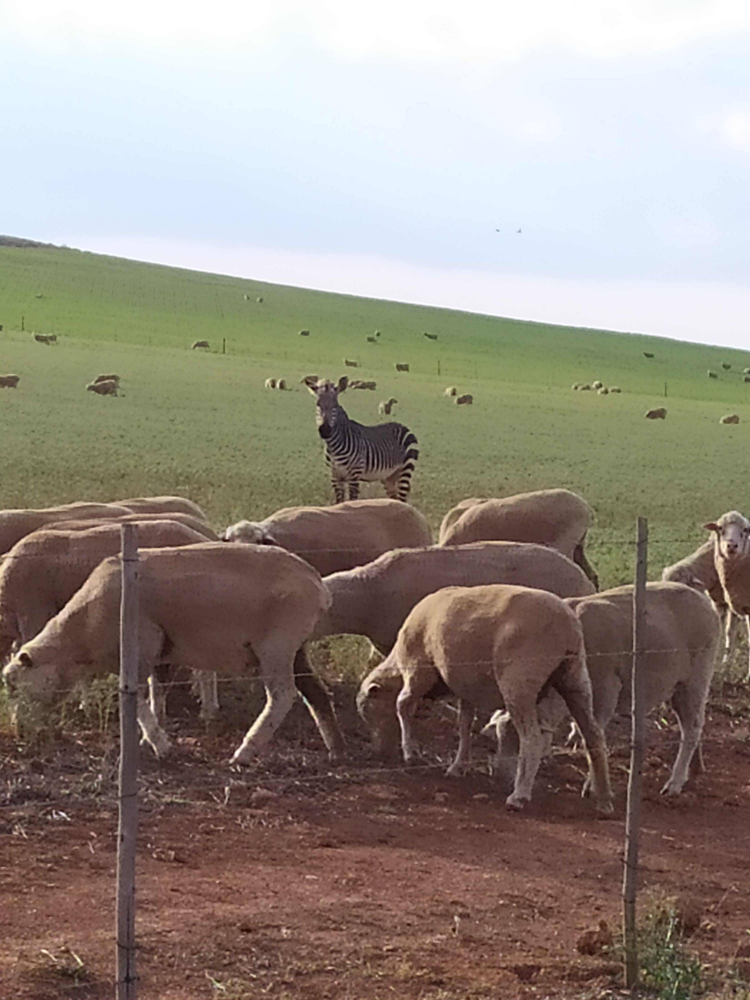
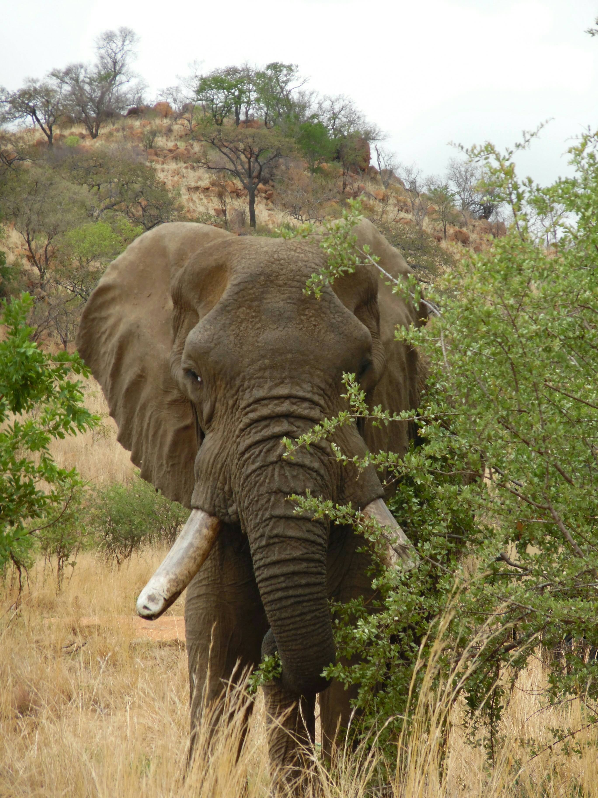
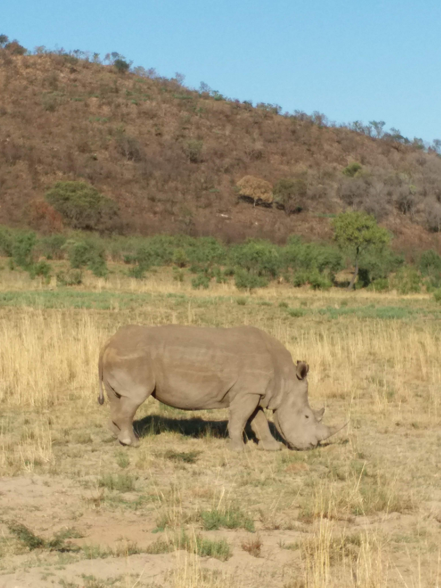
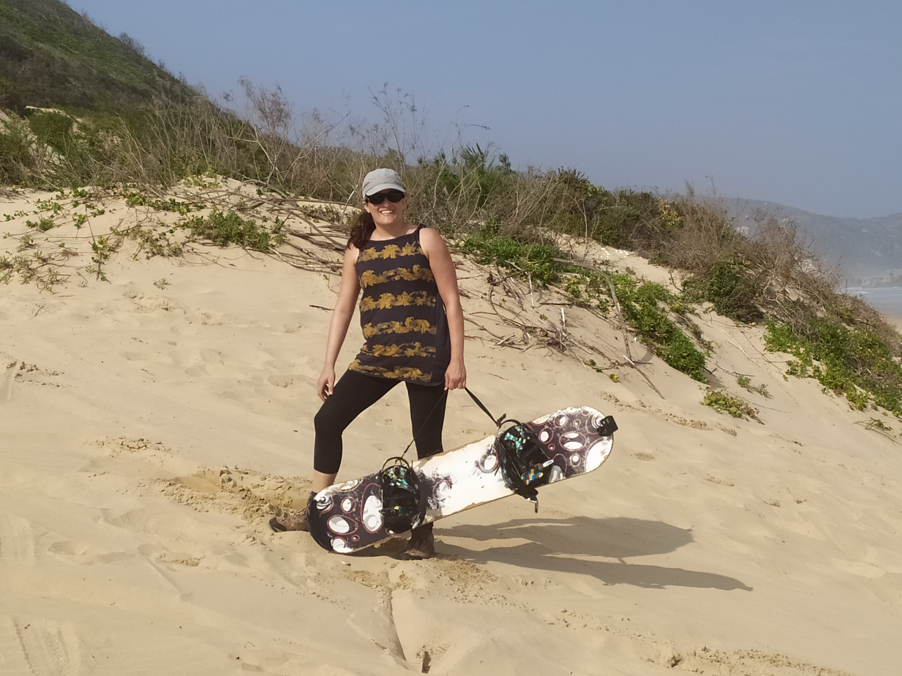

my name is Hadas, i'm 38 years old, work as a deputy content manager at 'The Israeli Net work' - Israeli TV channel.my hobbies are cooking, play and watch tennis, and travel abroad.
I visited many countries such:




South Africa, officially the Republic of South Africa (RSA), is the southernmost country in Africa.
With over 59 million people, it is the world's 24th-most populous nation and covers an area of 1,221,037 square kilometres (471,445 sq mi). South Africa has three capital cities: executive Pretoria, judicial Bloemfontein and legislative Cape Town. The largest city is Johannesburg.
About 80% of South Africans are of Black African ancestry,[9] divided among a variety of ethnic groups speaking different African languages.[13] The remaining population consists of Africa's largest communities of European, Asian, and multiracial ancestry